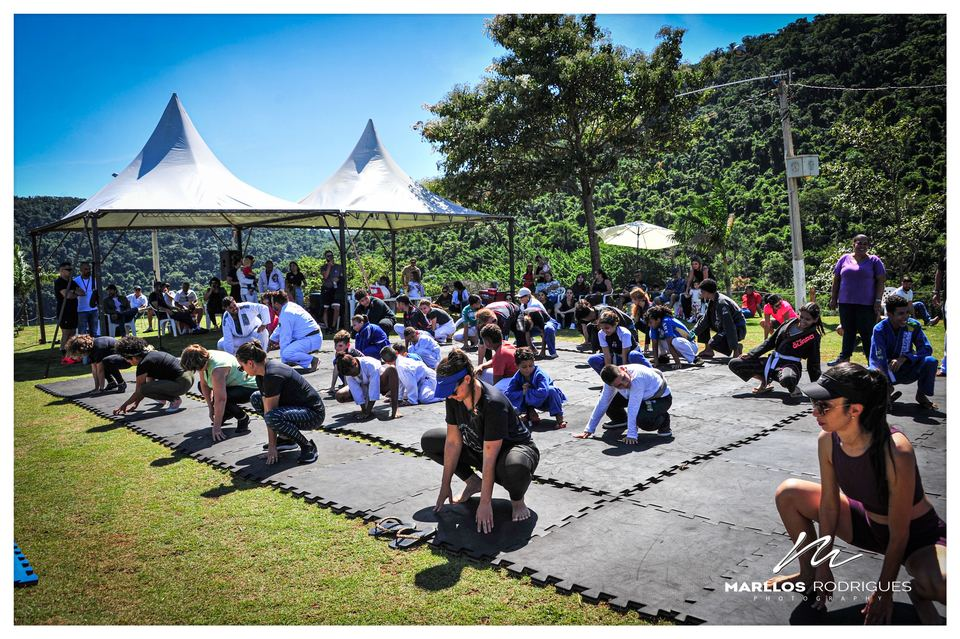
Some children just need an opportunity
And people willing to walk alongside them.
Educational sport as a tool for social change. Meet Instituto Pró-Ativo and the Jiu-Jitsu Para Todos (Jiu-Jitsu for Everyone) Project in Ourinhos, São Paulo, Brazil.

A social project that uses jiu-jitsu as a path to personal growth
Instituto Pró-Ativo is a Brazilian non-profit civil society organization committed to promoting citizenship, education and quality of life.
We promote social inclusion, school engagement and the holistic development of children and teenagers through educational sport — with jiu-jitsu as our main tool.
We focus on public school students aged 6 to 17 in socially vulnerable situations, referred by schools, CRAS (public social assistance centers) and the Child Protection Council — including neurodivergent children and teenagers.
The Jiu-Jitsu Para Todos Project is our main initiative: training athletes, building character, transforming lives.
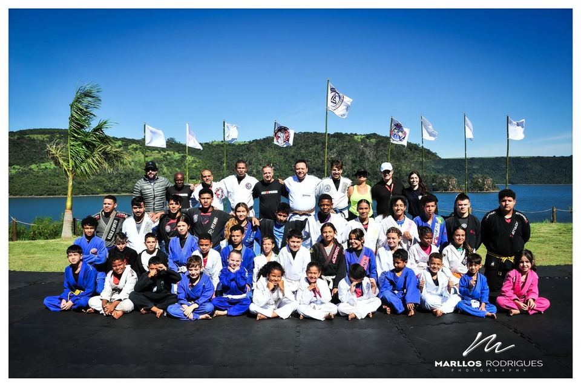
It all started with a mat
A handful of children, a simple mat and one certainty: sport transforms lives.
- 2015 The Jiu-Jitsu Para Todos Project begins with 8 students, started by Professor Humberto Martini, known as Betão (in memoriam), a 3rd-degree black belt (CBJJP/IPJJF member), and his students, after they noticed the growing interest of the neighborhood children. Among them was today's Sensei Ismaile Santos, who led the project from day one as a volunteer.
- Challenges and the pandemic The project grew organically and responsibly, moved through different venues and paused during the pandemic, resuming activities once it ended under the technical supervision of Sensei Ismaile Santos, a 1st-degree black belt (CBJJP/IPJJF member).
- 2021 We broadened our scope to welcome children with Autism Spectrum Disorder (ASD) and, later, children with ADHD, communication difficulties and non-verbal children — adapting our methodology, pace and approach.
- Today More than a decade of commitment to sport and social development. The mat has become a safe space of real inclusion and of achievements that go far beyond belts.
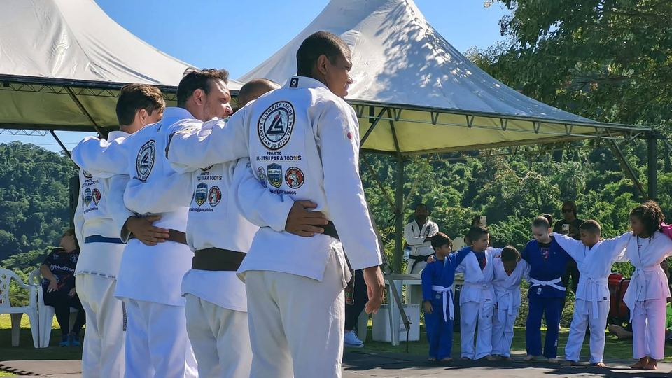
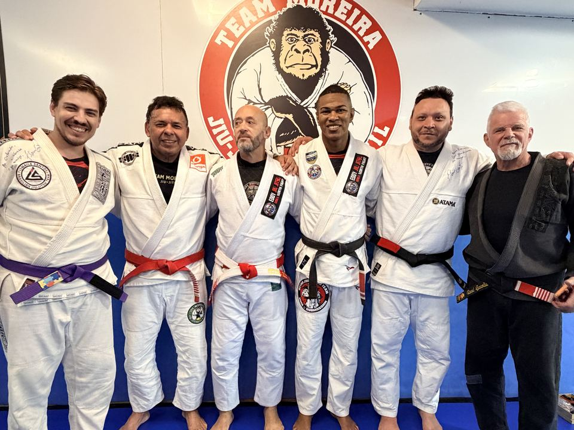
Lineage and tradition
The project represents the Eddy North Fight and Betão Jiu-Jitsu Team teams. Eddy North Fight is led by Mestre Edwilson Rocha dos Santos, known as Eddy, an 8th-degree coral belt (CBJJP/IPJJF, CBJJ/IBJJF, USBFJJ, CBJJS and FJJRIO). Mestre Eddy was a direct student of Reylson Gracie — son of Carlos Gracie, one of the founders of jiu-jitsu in Brazil — and is currently promoted by Grandmasters Joe Moreira, Austregésilo de Athayde and Relson Gracie, all 9th-degree red belts.
The social challenge
Many children and teenagers face daily challenges that directly affect their development.
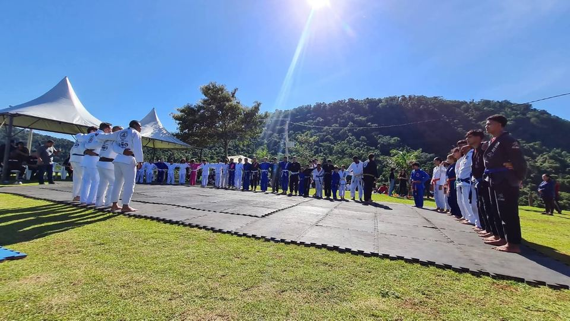
Lack of access
To sport and extracurricular activities.
Violence and idleness
Daily exposure to risky situations.
Low self-esteem
And difficulty with discipline and routine.
School dropout
A real risk of leaving school.
Without proper opportunities, these young people become more vulnerable to situations that put their future at risk. Many find on the mat what was missing: direction, belonging and support.
From the mat to the classroom
We work on four complementary fronts to care for every child as a whole.
Sport
Jiu-jitsu by age group and skill level, Pilates, yoga and a monthly group class that brings everyone together.
Education
Computer classes, trial classes at partner schools and APAEs (special-needs education associations), and talks on discipline and citizenship.
Personal development
A multidisciplinary team — psychology, occupational therapy, speech therapy and physical therapy — for neurotypical and neurodivergent children.
Family and school
An intake assessment for each child, attendance and grade tracking, and regular meetings with school leaders and families.
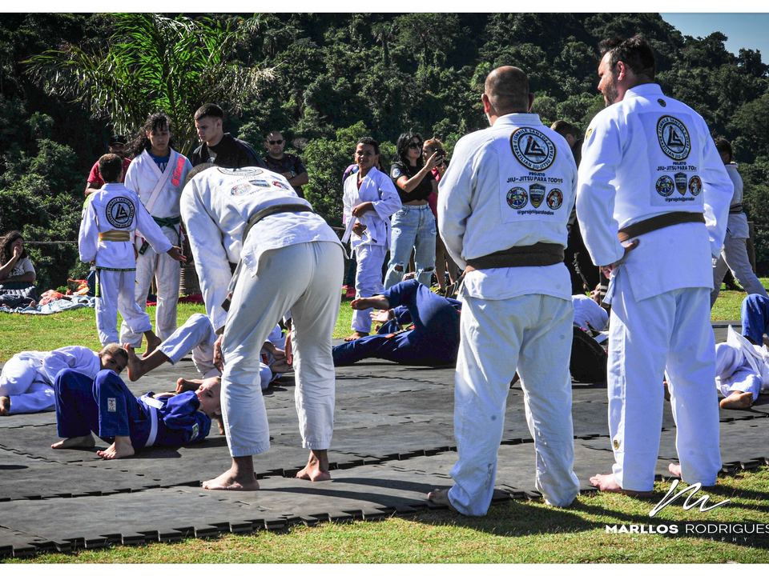

More than a sport, a tool for transformation
Our methodology rests on four core pillars, balanced across our students' technical and personal development.
Discipline and respect
Boundaries, hierarchy, getting along with others and responsibility — on and off the mat.
Focus, perseverance and resilience
Belt progression encourages clear goals, consistency and self-confidence.
Teamwork
Respect for training partners and for the value of the group.
Emotional self-control
Handling frustration, anxiety and challenges in a healthy way.
How we work
- Jiu-jitsu classes three times a week, by age group and skill level, respecting each student's pace.
- Attendance tracking and monitoring of technical and behavioral progress.
- Smaller groups for neurodivergent children, with multidisciplinary support.
- Referral by the school or the family, followed by an intake assessment to adapt routine and class placement.
- A qualified instructor and an assistant coach, with ongoing family involvement.

Technical training and athletic development
The project doesn't just include. It prepares and propels.
- Structured, federation-recognized belt system
- Participation in tournaments and events
- Progressive technical development
- Identifying and encouraging talent
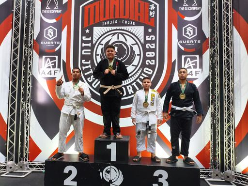
Moments from the project
Classes, open sessions, events and belt promotions: a glimpse of what happens on and off the mat.
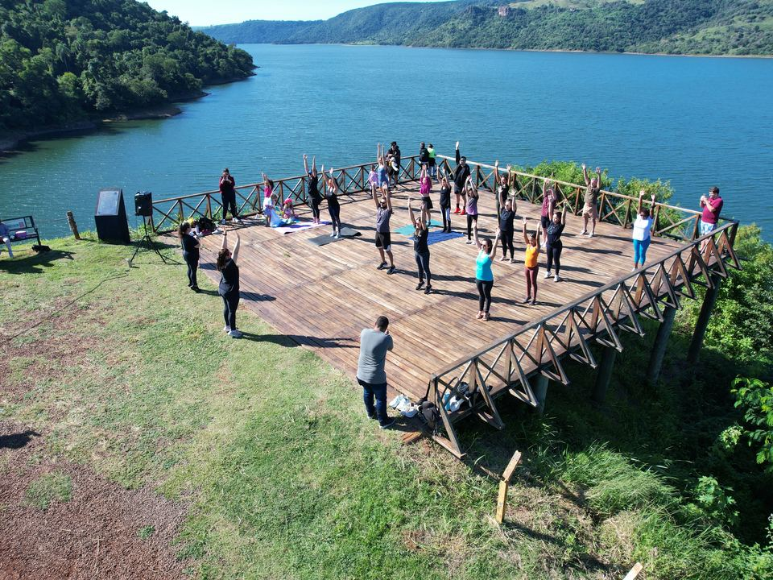


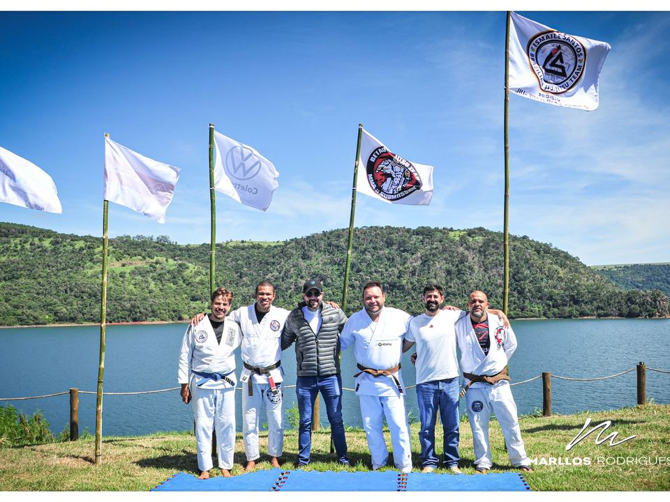

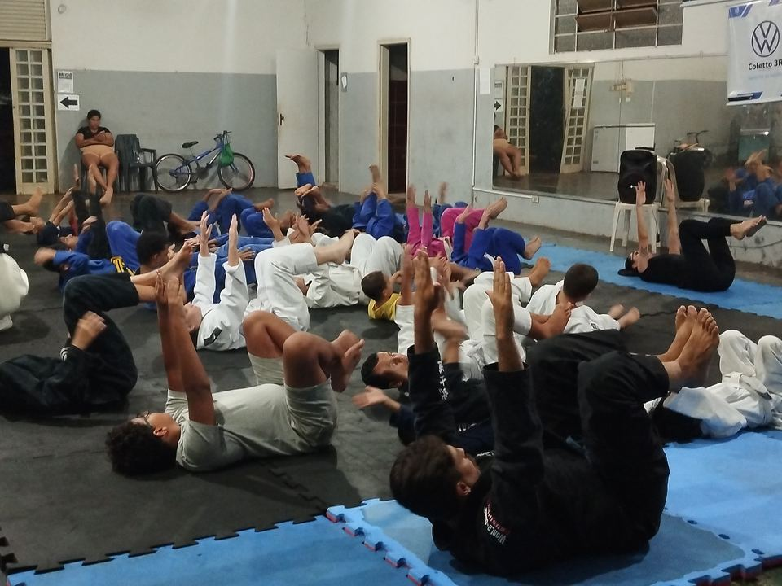
Our team
The people who bring the project to life, on and off the mat.
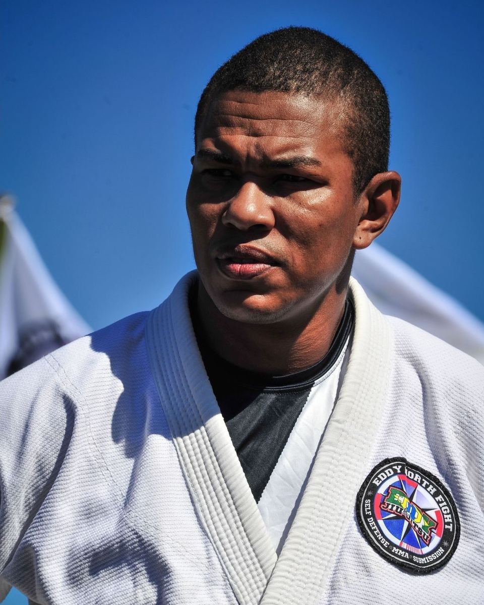
Sensei Ismaile Santos
1st-degree black belt instructor · CBJJP/IPJJF member
A student of Professor Humberto Martini, known as Betão (in memoriam), he has led Jiu-Jitsu Para Todos as a volunteer since it began in 2015 and has run its activities ever since — including the restart after the pandemic pause.
Under his technical supervision, the project began welcoming children with ASD, ADHD and other developmental challenges in 2021, adapting its methodology, pace and approach.
He represents the Eddy North Fight and Betão Jiu-Jitsu Team teams, rooted in the Gracie jiu-jitsu tradition.
Fernando Santim
InstructorHelps develop training sessions, trips and partnerships.
César Evaristo
Assistant coachHelps develop training sessions and projects on and off the mat.
Orlando Weber
CoachHelps develop training sessions, the brand and the kids methodology, under the head sensei's supervision.
Impact and goals
Today we serve more than 100 children and teenagers. We want to expand that reach to up to 200 students, with structured follow-up, family involvement and responsible technical training.
Where we are
Our goals
Indicators we track
- School attendance
- Behavioral progress
- Family participation
- Technical progression
Educational development
- Discipline and responsibility
- Lower school dropout
- Better behavior and school performance
- Routine and commitment
Stronger families and communities
- Closer family ties
- A safe place outside school hours
- Less exposure to idleness and risk
- Building positive relationships
Emotional and civic development
- Emotional regulation and self-control
- Respect for rules and hierarchy
- Teamwork
- Character and social values
Safety, governance and support network
Legal structure, transparency and accountability to care for every child — and every contribution we receive.
Safety and compliance
- Federation-registered instructors (CBJJP)
- Regular drug testing
- Background checks
- First aid certification
- Training to work with ASD and ADHD
Multidisciplinary support team
- Legal counsel
- Social work
- Physical educator
- Nutritionist
- Partner psychologists
Culture and commitment
- Ethics and transparency
- A safe, inclusive environment
- Educational follow-up
- Family follow-up
- Ongoing training
Institutional structure
- Established audit committee
- Volunteer board of directors
- Ongoing professional accounting
- Bylaws with nationwide scope
- Pilot center in Ourinhos, São Paulo
Support network
Complementary activities happen through partnerships with supporting professionals, students in training, municipal and state schools, CRAS and the Child Protection Council — always with technical oversight and responsible coordination.
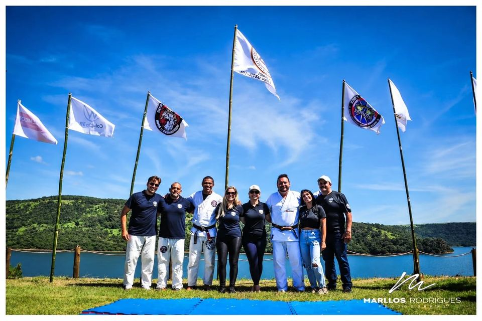
How you can be part of it
Business owners, professionals, educators, leaders: social impact is a shared responsibility.
We are building and strengthening the project to expand our reach and serve even more children. We want you to get to know this story up close — not as a spectator, but as part of it. Because great transformations don't happen on their own: they are built by people.
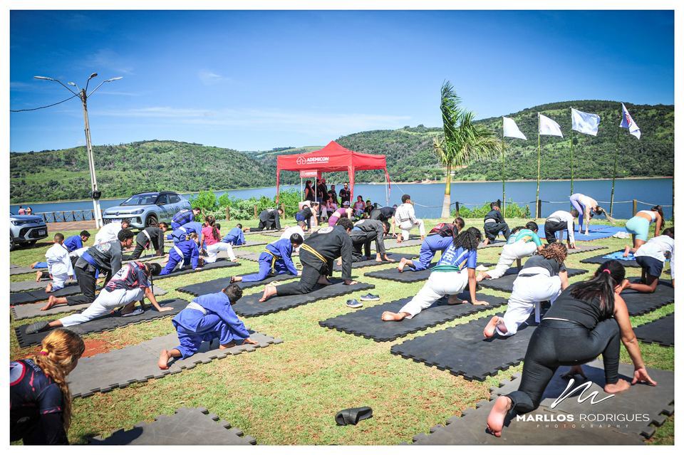
Knowledge
Share what you know: talks, mentoring, workshops.
Infrastructure
Support us with space, materials, equipment or services.
Professional expertise
Volunteer in your field: health, education, management, communications.
Investment
Help sustain and expand the project.
Spread the word
Share our story on social media and in your community.
Connections
Introduce people and companies. Open doors for the project.
You can support us with any amount, as an individual or as a company. Every contribution, personal or institutional, has a direct impact on a child's life.
Support through Brazilian tax incentives (Sports Incentive Law / FIA children's fund) is being validated — contact us to learn more.
Where the money goes
Funds raised go primarily to:
- Setting up the new space
- Water, electricity, internet and cleaning
- Fixed operating costs
- Sports equipment and everyday supplies
- Administrative support for operations
- Integration and training activities
How the project grows, step by step
-
Set up the new space
Get the new space up and running.
-
Ensure continuous operation
Improve quality, reach and consistency.
-
Grow the team and its commitment as the foundation strengthens
Move on, at the right time, to paying instructors, assistant coaches and administrative staff.
Partner benefits
Brand visibility, association with the cause and presence at the Institute's activities.
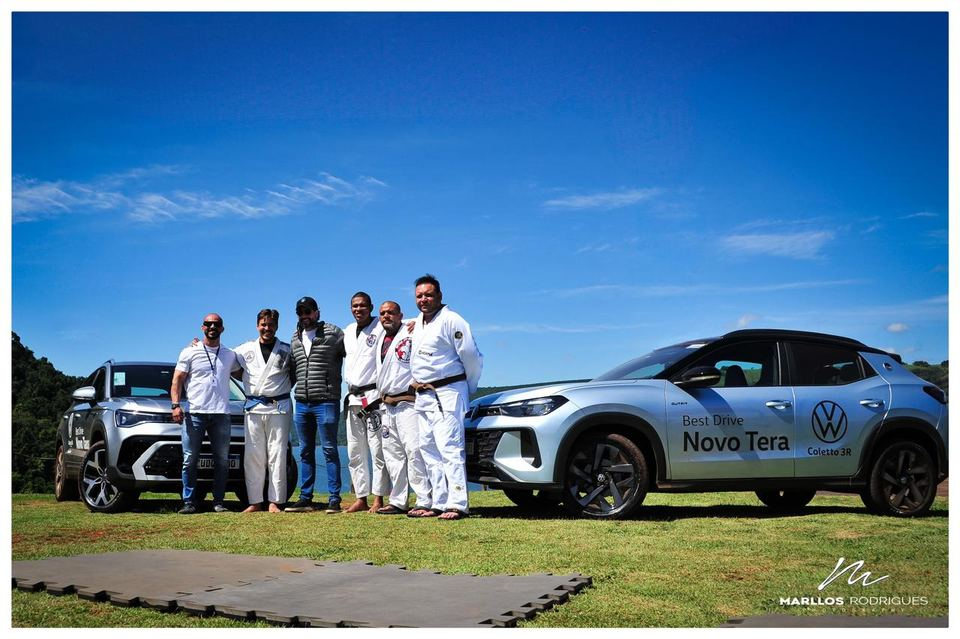
Want to know how your company can get involved?
We'll talk about the kind of support that makes the most sense for your business and send you a full proposal.
Talk to us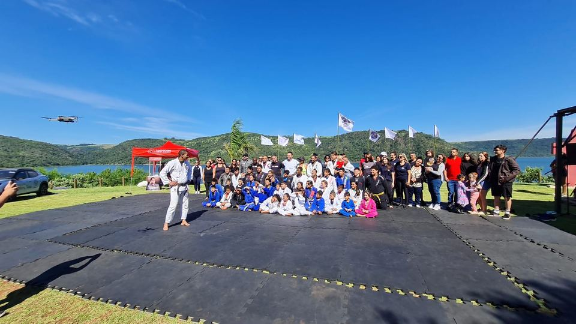
We shape people. Before we shape athletes.
Contact us
If this resonates with you, come and see it up close. Feel the atmosphere, talk with the children and see what we are building.
- @institutoproativo (opens in a new tab)
- @projetojjparatodos (opens in a new tab)
- @eddynorthfight.ourinhos (opens in a new tab)